Project 2 · Flow Matching and Creative Point-Cloud Generation
From Gaussian Noise to a Sword
Can a model learn to move Gaussian points into a target shape, and can we sample the learned flow in fewer steps? An annulus makes it possible to check the basic transport. A sword silhouette then makes it possible to see where coarse Euler steps lose detail. Across three sword runs, one round of reflow brought five-step mean grid TV to 0.119, close to the 50-step baseline's 0.120.
1. Learning a 2D flow
For the annulus, I sampled angle uniformly from [0, 2π) and squared radius uniformly from [0.64, 1.5625]. Sampling squared radius gives uniform density per unit area. The source is a standard two-dimensional Gaussian. Each training example pairs independent source and target draws and samples t uniformly from [0, 1].
xt = (1 − t)x0 + t x1 · u = x1 − x0 · loss = E[‖vθ(xt, t) − u‖2]
Differentiating the interpolation gives a constant velocity for each pair. The network sees only the position and time, so mean squared error encourages it to estimate the conditional mean of the possible velocities there. Different pairs can call for different movements, which explains why the training loss stays positive. Following the resulting velocity field can therefore give a curved trajectory even though each training path is straight.
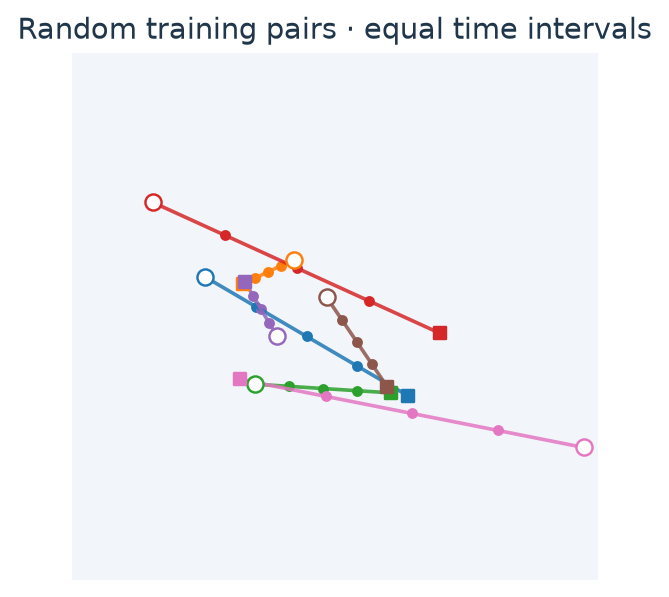
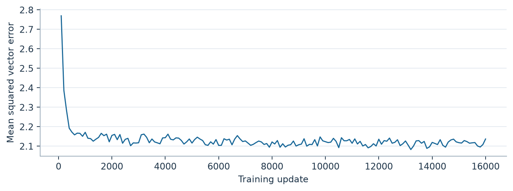
Following the learned velocity field
At generation time, I start with fresh noise and integrate the learned field using zk+1 = zk + Δt vθ(zk, tk). With 256 Euler steps, 92.4% of 4,096 points land in the intended annulus and 1.9% land in the central hole.
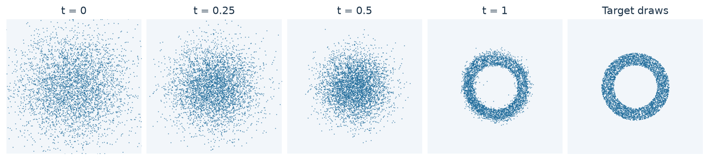
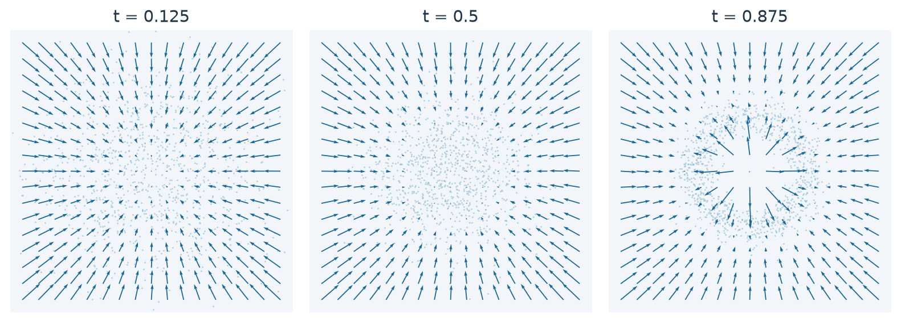
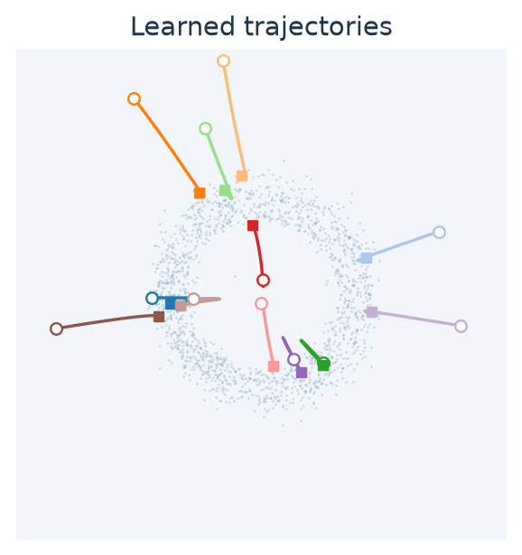
At t = 0.125, arrows point mostly inward, shrinking the initial cloud. Near t = 0.875, the arrows just inside the ring point outward and the arrows farther out still point inward. The cloud first contracts, then spreads away from the center to form the hole.
The training pairs specified a straight path to each assigned endpoint. The paths here follow the local velocity field, and each starting point reaches the endpoint determined by the solve.
Part 2
2. Generating the sword
The sword is the union of a tapered blade, crossguard, grip, and circular pommel. I draw points uniformly in the rectangle [−0.80, 0.80] × [−1.60, 1.56] and keep points inside the union. Each location is counted once where two pieces overlap. The geometry is original and uses no external image.
The animation tracks 3,600 particles through a 256-step Euler solve of the seed-17 baseline. Each particle keeps the color assigned from its initial horizontal coordinate. The network receives position and time only. Color lets us follow the same points as the blade and guard emerge.

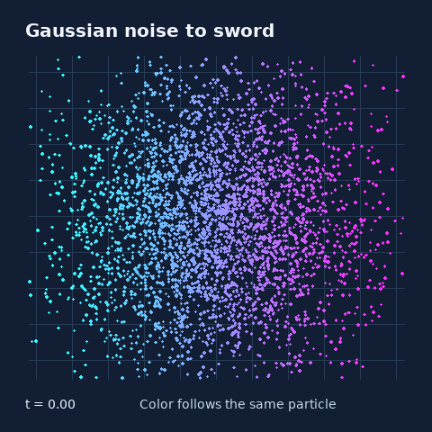

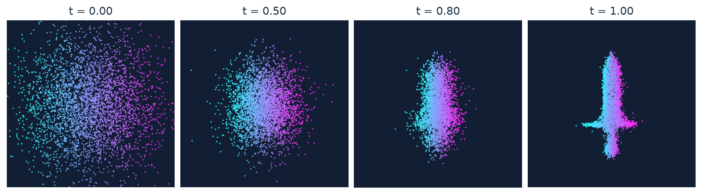
What changes when we take fewer steps?
For each seed, I fix the model, the 16,384 Gaussian starts, and an independent target sample of equal size. Grid TV is half the sum of the absolute differences in bin proportions. All comparisons use 60 × 60 bins over [−3, 3]² plus an overflow bin. The sword sweep produced zero overflow. Two independent target samples give mean TV 0.058, a reference for sampling variation at this grid size.
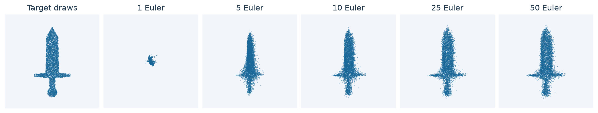
| Euler steps / NFE | Grid TV ↓ | Endpoint error ↓ | Inside silhouette | CPU ms |
|---|---|---|---|---|
| 1 | 0.918 | 0.712 | 99.98% | 3.5 |
| 5 | 0.361 | 0.164 | 96.35% | 17.4 |
| 10 | 0.231 | 0.083 | 96.56% | 34.8 |
| 25 | 0.138 | 0.031 | 95.18% | 87.0 |
| 50 | 0.120 | 0.014 | 94.31% | 174.1 |
Three-seed means. Endpoint error is mean Euclidean distance to the same model's 256-step endpoint from the same start. Times cover sampling only and average each seed's median of seven timed solves after warm-up.
The one-step cloud puts 99.98% of points inside the sword but has TV 0.918. At t = 0, independent pairing makes the ideal velocity the target mean minus the starting position, so one Euler update sends every point to the mean. The learned model nearly reproduces that collapse. At 50 steps the mean endpoint error falls to 0.014, while target TV stays at 0.120. A 256-step solve reduces it only to 0.113, leaving a gap larger than the independent target-sample reference.
Part 3
3. Reflow and the shape of the paths
I expected reflow to make the baseline transport more direct and reduce the number of Euler steps needed for a comparable sword. For each frozen baseline, I drew 32,768 new Gaussian starts, ran 256 Euler steps, and saved each start with its own generated endpoint. Doubling the teacher's grid to 512 steps on a subset shifted endpoints by 0.0017 coordinate units on average. I trained a fresh MLP of the same architecture on linear interpolations between the saved pairs.
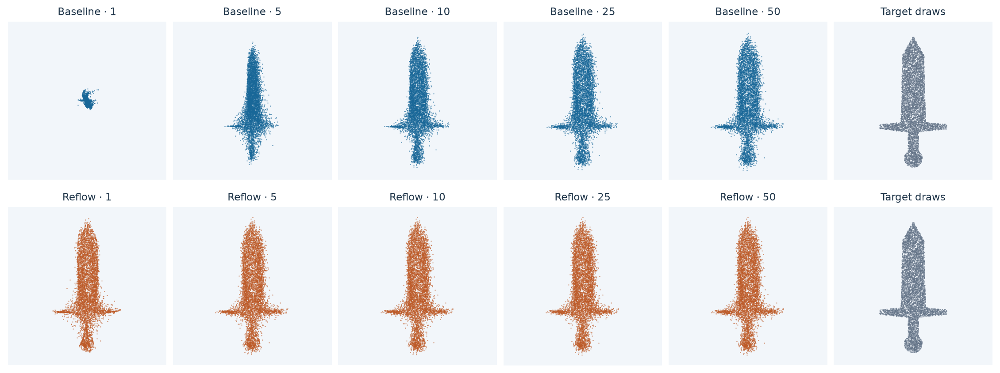
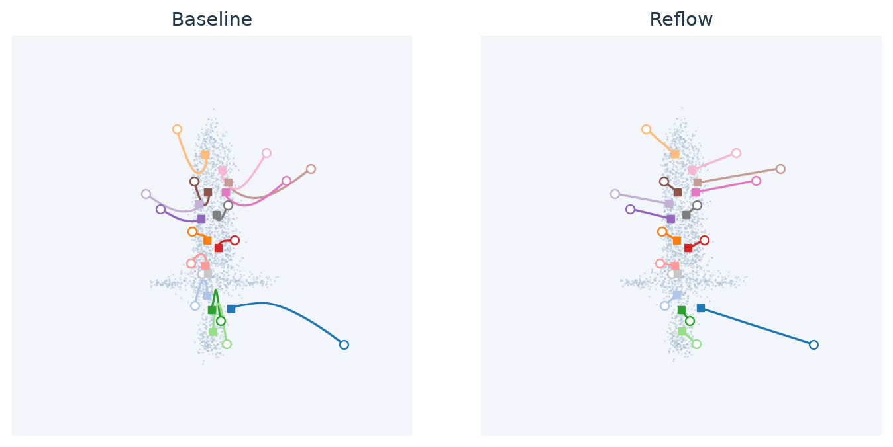
I measured path excess as the sum of segment lengths minus the straight distance from start to finish, using 2,048 held-out starts from each evaluation batch. The mean fell from 0.215 to 0.00003 coordinate units. The endpoint error against each model's own 256-step solve fell from 0.712 to 0.011 at one step. The small coarse-solve error is consistent with a velocity that changes little along the reflow trajectories.
The pairing explains why this is plausible. A reflow endpoint depends on its source through the teacher's transport, so the direction at t = 0 can depend on which source point we drew. At the same time, these endpoints carry the teacher's density errors. This gives a reason to expect straighter paths and more accurate coarse solves, with a smaller effect on fine-step target quality.
Results
Quality at a smaller sampling budget
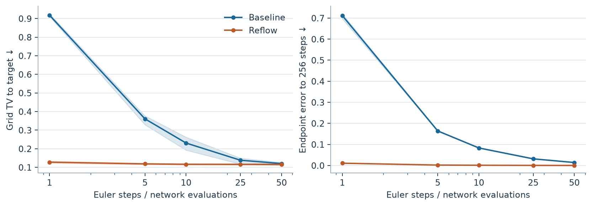
| Euler steps / NFE | Baseline TV ↓ | Reflow TV ↓ | Baseline ms | Reflow ms |
|---|---|---|---|---|
| 1 | 0.918 | 0.128 | 3.6 | 3.5 |
| 5 | 0.361 | 0.119 | 17.5 | 17.4 |
| 10 | 0.231 | 0.116 | 34.9 | 34.9 |
| 25 | 0.138 | 0.116 | 87.4 | 87.1 |
| 50 | 0.120 | 0.116 | 176.0 | 174.6 |
Means across three paired runs. One batched velocity-network evaluation per Euler step, for 16,384 points. CPU time excludes rendering and evaluation metrics.
| Seed | Baseline 50-step TV | Reflow 5-step TV | Baseline excess | Reflow excess |
|---|---|---|---|---|
| 17 | 0.126 | 0.122 | 0.220 | 3.02e-05 |
| 29 | 0.110 | 0.114 | 0.210 | 3.00e-05 |
| 43 | 0.125 | 0.120 | 0.213 | 3.46e-05 |
Grid TV and mean excess by seed for the five-step reflow versus 50-step baseline comparison.
At five steps, reflow averaged TV 0.119 versus 0.120 for the 50-step baseline, with 17.4 versus 176.0 ms of sampling time. It matched or improved the 50-step baseline's TV on 2 of the three seeds. At 256 steps the baseline and reflow TVs were 0.113 and 0.116, respectively. On this target, reflow preserved much of the teacher's endpoint quality while making it accessible at a smaller inference budget.
Generating the paired dataset took 1.9 s per run, and fitting reflow took another 8.7 s. The initial sword model took 17.6 s on average. Those are costs paid before sampling. The extra fitting cost is paid once, while the savings recur with each generated batch. The three seeds measure how much that comparison varied on this target.
References
- Lipman, Chen, Ben-Hamu, Nickel, and Le. Flow Matching for Generative Modeling. ICLR 2023.
- Liu, Gong, and Liu. Flow Straight and Fast: Learning to Generate and Transfer Data with Rectified Flow. ICLR 2023.